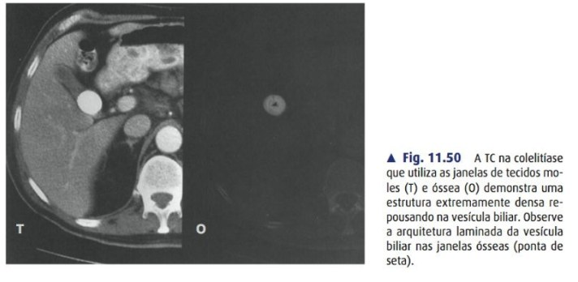
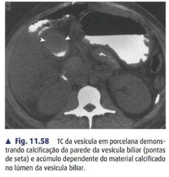

Tema único e completo: da colelitíase à colecistite aguda (diagnóstico e gravidade TG18, timing cirúrgico WSES), com a técnica das duas vias reunidas — laparoscópica (Calot, Critical View of Safety) e aberta (Kocher, conversão) — mais a vesícula difícil (subtotal, Mirizzi, cirrose) e a lesão de via biliar (Strasberg). Base: Tokyo Guidelines 2018, WSES 2020, SAGES Safe Cholecystectomy, e pegadinhas das 5 bancas do RS.
A colelitíase (cálculos na vesícula) é o substrato de quase tudo. A maioria é assintomática; o sintoma clássico é a cólica biliar — dor em hipocôndrio direito/epigástrio, pós-prandial (gordura), que dura <6 h e cede. Quando a dor persiste >6 h + febre + Murphy, instalou-se a colecistite aguda.

| Complicação | Essência |
|---|---|
| Coledocolitíase | Cálculo no colédoco → icterícia; estratificar risco (ASGE) → CPRE × exploração |
| Colangite | Obstrução + infecção da via biliar; tríade de Charcot / pêntade de Reynolds → CPRE (ver tema próprio) |
| Pancreatite biliar | Cálculo impactado na papila |
| Síndrome de Mirizzi | Cálculo no infundíbulo/cístico comprime o hepático comum → icterícia; risco de fístula colecistobiliar |
| Íleo biliar | Fístula colecistoentérica → cálculo grande obstrui o íleo terminal; tríade de Rigler (pneumobilia + obstrução + cálculo ectópico) |
| Síndrome de Bouveret | Variante alta: cálculo obstrui o duodeno (obstrução de saída gástrica) |
| Vesícula em porcelana | Calcificação da parede; associação com câncer de vesícula → colecistectomia |

| Grupo | Critério |
|---|---|
| A · Sinais locais | Murphy; massa/dor/defesa em HD |
| B · Sinais sistêmicos | Febre; PCR elevada; leucocitose |
| C · Imagem | Achados de colecistite aguda no US/TC/RM |
Suspeita = 1 de A + 1 de B. Diagnóstico definitivo = 1 de A + 1 de B + C.
| Grau | Definição |
|---|---|
| I · Leve | Não preenche II/III; vesícula sem inflamação grave, paciente hígido |
| II · Moderado | Qualquer um: leucócitos >18.000; massa palpável em HD; sintomas >72 h; inflamação local marcada (gangrena, abscesso pericolecístico/hepático, peritonite biliar, enfisematosa) |
| III · Grave | Disfunção orgânica: cardiovascular (vasopressor), neuro, respiratória, renal (Cr >2 / oligúria), hepática (INR >1,5), hematológica (plaquetas <100.000) |
O tratamento da colecistite aguda é a colecistectomia (laparoscópica) precoce, associada a suporte e antibiótico. "Precoce" venceu o velho "esfriar e operar depois": menos complicações, menor internação, sem aumento de lesão.
É o padrão-ouro para colelitíase sintomática e colecistite aguda. Menor dor, internação e retorno precoce; a segurança depende da dissecção correta do triângulo.
Veress ou Hasson umbilical, 12–14 mmHg. Óptica de 30°. Quatro portais: umbilical (óptica), epigástrico (trabalho principal, à direita do ligamento falciforme), subcostal médio-clavicular e subcostal axilar anterior (tração).
Proclive + rotação para a esquerda. Pinça do portal axilar traciona o fundo em direção cranial, sobre o fígado. Pinça do portal médio-clavicular traciona o infundíbulo (bolsa de Hartmann) ínfero-lateralmente.
Abrir o peritônio anterior e posterior do triângulo, "varrendo" a gordura do infundíbulo. Dissecção alta, junto à parede da vesícula, sempre acima do plano do cístico.
Os três critérios, todos completos: (1) triângulo hepatocístico limpo de gordura e fibrose; (2) terço inferior da vesícula descolado do leito, com a placa cística exposta; (3) apenas duas estruturas entrando na vesícula.
Artéria cística: clipar e seccionar primeiro. Ducto cístico: 2 clipes proximais + 1 distal, coto de < 1 cm. Cístico largo ou friável (colecistite aguda) → endoloop ou sutura, não clipe.
Descolamento retrógrado — do infundíbulo em direção ao fundo — no plano da placa cística. Hemostasia progressiva; inspecionar o leito à procura de ductos de Luschka.
Peça sempre em bolsa, pelo portal umbilical. Revisar leito, clipes e hilo com a pressão do pneumoperitônio reduzida. Recuperar cálculos derramados. Dreno apenas em contaminação, dúvida de hemostasia ou suspeita de fístula.
A Visão Crítica de Segurança (CVS, Strasberg) é o método padrão para identificar com certeza o ducto cístico e a artéria cística antes de clipar — reduz a lesão de via biliar por confusão anatômica.
Kocher dois dedos abaixo do rebordo costal direito, do rebordo à linha média. A mediana é preferida na conversão de urgência, em sangramento ativo ou quando não se sabe o que se vai encontrar.
Afastador autoestático (Gosset ou Balfour) + válvula maleável sobre o fígado. Compressas rebatendo cólon transverso e duodeno caudalmente. Tração do fundo cranial e do infundíbulo lateral — a mesma lógica de duas direções da laparoscopia.
Abrir o peritônio do triângulo, identificar ducto cístico e artéria cística. A CVS vale igual na aberta. Palpar o ligamento hepatoduodenal entre polegar e indicador — a manobra de Pringle digital localiza o colédoco e permite controle vascular imediato se houver sangramento.
Artéria: ligar ou transfixar com seda 2-0/3-0, ou clipar; seccionar. Ducto: ligadura dupla ou clipe. Colangiografia transcística se anatomia dúbia ou suspeita de coledocolitíase.
Retrógrada (do colo ao fundo) é o padrão — identifica cístico e artéria antes de descolar. Anterógrada / fundus-first (do fundo ao colo) quando o triângulo está hostil: descola-se a vesícula do leito primeiro e chega-se ao pedículo por cima, com a peça já quase livre.
Hemostasia do leito com eletrocautério ou coagulador de argônio; revisar ductos de Luschka. Dreno apenas se contaminação, dúvida de hemostasia, bile no campo ou colecistectomia subtotal. Fechar a parede por planos.
Quando a CVS não é alcançável com segurança, a recomendação atual (SAGES Safe Cholecystectomy Program) é abandonar a dissecção do triângulo em vez de insistir. As opções podem ser combinadas, e o objetivo é único: evitar a lesão de via biliar.
Deixa a placa cística e a parede posterior aderidas ao leito, sem nunca entrar na área perigosa do hilo. Classificação de Strasberg (2016):
| Tipo | O que se faz com o remanescente | Trade-off |
|---|---|---|
| Fenestrante | Deixa o coto aberto, com ablação da mucosa; dreno obrigatório | Menos recidiva de cálculo · mais fístula biliar |
| Reconstituinte | Fecha o remanescente do infundíbulo (cria uma "minivesícula") | Menos fístula · mais recidiva de cálculo, sintomas e reoperação |
| Tipo | Lesão |
|---|---|
| A | Fístula do coto cístico ou de ducto de Luschka (via biliar principal íntegra) |
| B | Oclusão de ducto hepático direito aberrante |
| C | Secção de ducto hepático direito aberrante (sem ligadura → fístula) |
| D | Lesão lateral (parcial) da via biliar principal |
| E | Secção circunferencial da via biliar principal (E1–E5 de Bismuth, pela altura) |